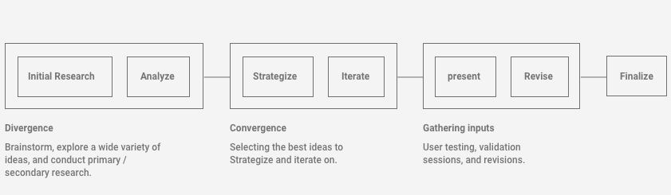
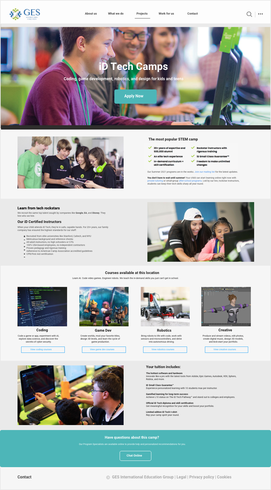

GES Website
Resigning GES official website to improve the UX side of the website for increasing its leads and conversions.
Team
1 Designers, 1 Project Manager, 2 Developers
Tools
Sketch, Whimsical, Axure
Tags
Web Application, UI/UX, User Research
Timeline
Full-time (One Month)
INTRODUCTION
Project Overview
GES’s official website redesign is one of the major projects I did in GES International Education Group. It is a comprehensive education company founded in Silicon Valley of United States. GES aims to inspire teenagers’ innovative potential and lead them to a global dual-track (online and offline) community of innovative learning through developing different innovative technology camps and projects. So far, it has served more than 31,000 teenagers around the world.
As leading designer of the official website redesign project, my work focuses on improve its usability and UX design, upgrade its visual look, manage published content and improve its conversion rate. I'm also responsible for the platform maintaining and continuously optimizing.
HOW IT BEGINS
Problem Statement
Through talks with key stakeholders, I decided to focus on improving the UX side of the website and potentially increasing its leads and conversions.
Our main goals were:
- Make it attractive and easy to use for every potential user.
- QR/Barcode Scanner Integration
- Increase its leads and conversions.
The Challenge
How might we improve the UX side of the website conforming to the company's brand image as well as potentially increase the website’s leads and conversions?
The Design Process
Understanding GES Identity
We began our initial research by spending most of our time getting familiar with GES brand identity and vision. The Stakeholders believe that the official website is an important channel to display the company’s image. Therefore, understanding the company’s vision was important.
To summarize our understanding, we created key words that surround the brand:
- Innovation
- Education
- Vitality
- Dream

Analysis
While analyzing the different brands that successfully spoke to their brand identity, I was able to find different patterns and trends that could be leading the success of those companies.
- Strong brand imagery
- Hero banners are 80% imagery, 20% text
- UX writing follows brand visions
- 1-2 primary/secondary CTAs available
User Persona
After defining the major goals, I collaborated with a team of four and conducted research on our user and target audience. Based on the data we get, I developed a primary persona, which demonstrates our target users, their goals and their frustrations.
Wireframe
Our first round of iterations focused on the implementation on the home page. We began by creating low-fidelity wireframes of what the first 2 sections could look like.
Based on our goals and analysis, the direction that we were going towards was attractive photography accompanied with minimal content and straightforward CTA, driving user to browsing what’s new and explore further.
As for the second section, we decided to use a more direct view of the confirmed projects. We decided this because it piques the interest of the viewer and could entice them to view all of the projects.
For the second part, we decided to display the projects using a direct view of project picture and brief introduction. We decided this because it not only can arouse the interest of the viewer, but also allows them to have a general understanding of the project to facilitate follow-up click to view product details.
Exploration Feedback
"Concept 2 looks more intuitive than Concept 1, and the full bleed imagery gives a stronger visual impact."
"Concept 2 is closer to what we want. The text and button in the middle have a more direct view than at the left side. I incline to catch it for the first sight.”
"Concept 2 has more scalability for the imagery than Concept 1.”
Iterations
Based on the previous feedback received, we decided to focus on the 2nd concept. Here you can see some of the iterations that we explored.
We iterated on how to display images and text in the top heading for the best results. We tried different sizes and layers of text headings (whether to use secondary heading).
In addition, we also explored whether to choose the banner photographs taken from campsites or conceptual images showing teenagers learning and innovating.
Iteration Feedback
These concepts were presented to the client, project manager, and brand director.
“The banner image of Concept 1 as a background can display the text more clearly.”
"The fonts in Concept 2 which use the mix of bold, medium and regular to distinguish between the primary title and the secondary title seem to be more coordinated than the font which are all bold used in Concept 1. In addition, the font for “Read more” in both Concept 1&2 could increase to a bigger size to drive viewers to click."
"From an aesthetic point of view, the conceptual photographs in Concept 1 are better than the photographs shoot from campsites in Concept 2."
Final Homepage
The final main page design conforms to the GES brand image, and the homepage banner image shows the concept of "education, innovation, vitality, and dream" in the GES brand culture. The full bleed picture with minimal content has a strong visual impact and attractiveness, which is more aesthetical and can catch the user's attention at once. From content perspective, the content includes primary headline, secondary headline and CTA button, which can play the role of increasing the website’s leads and conversions.
Projects Page
The final project page displays all product information (project introduction, courses, fees, etc.). The narrative of the page is structured according to the content, so that users can understand the project information more intuitively. The structured approach streamlines the viewers understanding the project and also the company.
In addition, the project page contains CTA buttons. The button to sign up for this project on the top, the button to browse course details in the middle and the button to consult for more project-related information on the bottom can guide the viewer to operate further, which effectively increases the website’s leads and conversions.
Metrics üëÄ
Currently looking into the data of this new designs. Please come back to this case study at a later date to view!
Final Thoughts⚡
This project was the first web design project that I participated. I was able to dive deep into the UX strategy behind many of our decisions learned about what worked and what didn’t based off of the feedback.
The feedback rounds and reviews were extremely helpful as they were able to show me different perspectives and solutions towards the same problem. This broadened my way of thinking.
Working for an already established brand was difficult because of the strong vision already had. While integrating our solutions we also had to be constantly thinking about the brand. This definitely challenged us to think about the business holistically and not just on the user flow itself.
Thanks for Reading ❤️
If you’d like to hear more about my experience, feel free to send me an email–I’d love to chat ☕.
My Other Projects
If you'd like to see more, check out my other projects below!